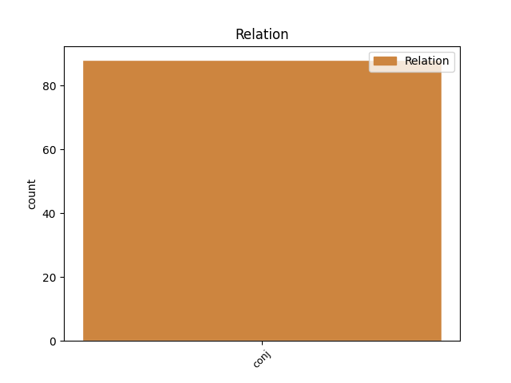

Distribution of features within this leaf

Agreement Rules sorted by frequency.
- When the dependent token is the conjunct(conj) of the head token, and the head token is AUX and the dependent token is VERB.
1 в _ _ _ _ 0 _ _ _
2 нихʼ _ _ _ _ 0 _ _ _
3 же _ _ _ _ 0 _ _ _
4 бѧше быти AUX V- Aspect=Imp|Mood=Ind|Number=Sing|Person=3|Tense=Past|VerbForm=Fin|Voice=Act 0 _ _ _
5 е҃ _ _ _ _ 0 _ _ _
6 моужь _ _ _ _ 0 _ _ _
7 страшны _ _ _ _ 0 _ _ _
8 възрастомъ _ _ _ _ 0 _ _ _
9 и _ _ _ _ 0 _ _ _
10 взором _ _ _ _ 0 _ _ _
11 и _ _ _ _ 0 _ _ _
12 бьꙗхꙋ бити VERB V- Aspect=Imp|Mood=Ind|Number=Plur|Person=3|Tense=Past|VerbForm=Fin|Voice=Act 4 conj _ ref=311r8
13 гражанъ _ _ _ _ 0 _ _ _
14 нещадно _ _ _ _ 0 _ _ _
Disagree Examples:
1 а _ _ _ _ 0 _ _ _
2 что _ _ _ _ 0 _ _ _
3 тобѣ _ _ _ _ 0 _ _ _
4 бꙋдет быти AUX V- Mood=Ind|Number=Sing|Person=3|Tense=Fut|VerbForm=Fin|Voice=Act 0 _ _ _
5 надобетъ _ _ _ _ 0 _ _ _
6 бѣ _ _ _ _ 0 _ _ _
7 ꙋ _ _ _ _ 0 _ _ _
8 менѧ _ _ _ _ 0 _ _ _
9 и _ _ _ _ 0 _ _ _
10 ты _ _ _ _ 0 _ _ _
11 ко _ _ _ _ 0 _ _ _
12 мнѣ _ _ _ _ 0 _ _ _
13 пришли присълати VERB V- Mood=Imp|Number=Sing|Person=2|Tense=Pres|VerbForm=Fin|Voice=Act 4 conj _ ref=4
14 и _ _ _ _ 0 _ _ _
15 ѧз _ _ _ _ 0 _ _ _
16 тобѣ _ _ _ _ 0 _ _ _
17 своемѹ _ _ _ _ 0 _ _ _
18 братѹ _ _ _ _ 0 _ _ _
19 за _ _ _ _ 0 _ _ _
20 то _ _ _ _ 0 _ _ _
21 не _ _ _ _ 0 _ _ _
22 стою _ _ _ _ 0 _ _ _
1 да _ _ _ _ 0 _ _ _
2 аще _ _ _ _ 0 _ _ _
3 инъ _ _ _ _ 0 _ _ _
4 кто _ _ _ _ 0 _ _ _
5 помыслить _ _ _ _ 0 _ _ _
6 на _ _ _ _ 0 _ _ _
7 страну _ _ _ _ 0 _ _ _
8 вашю _ _ _ _ 0 _ _ _
9 да _ _ _ _ 0 _ _ _
10 и _ _ _ _ 0 _ _ _
11 азъ _ _ _ _ 0 _ _ _
12 буду быти AUX V- Mood=Ind|Number=Sing|Person=1|Tense=Fut|VerbForm=Fin|Voice=Act 0 _ _ _
13 противенъ _ _ _ _ 0 _ _ _
14 ему _ _ _ _ 0 _ _ _
15 и _ _ _ _ 0 _ _ _
16 борю брати VERB V- Mood=Ind|Number=Sing|Person=1|Tense=Pres|VerbForm=Fin|Voice=Act 12 conj _ ref=73.8
17 сѧ _ _ _ _ 0 _ _ _
18 с _ _ _ _ 0 _ _ _
19 нимъ _ _ _ _ 0 _ _ _
20 якоже _ _ _ _ 0 _ _ _
21 клѧхъ _ _ _ _ 0 _ _ _
22 сѧ _ _ _ _ 0 _ _ _
23 ко _ _ _ _ 0 _ _ _
24 ц҃рмъ _ _ _ _ 0 _ _ _
25 гречьскимъ _ _ _ _ 0 _ _ _
26 и _ _ _ _ 0 _ _ _
27 со _ _ _ _ 0 _ _ _
28 мною _ _ _ _ 0 _ _ _
29 болѧре _ _ _ _ 0 _ _ _
30 и _ _ _ _ 0 _ _ _
31 русь _ _ _ _ 0 _ _ _
32 всѧ _ _ _ _ 0 _ _ _
33 да _ _ _ _ 0 _ _ _
34 схранимъ _ _ _ _ 0 _ _ _
35 правая _ _ _ _ 0 _ _ _
36 съвѣщанья _ _ _ _ 0 _ _ _
1 да _ _ _ _ 0 _ _ _
2 аще _ _ _ _ 0 _ _ _
3 будете _ _ _ _ 0 _ _ _
4 в _ _ _ _ 0 _ _ _
5 любви _ _ _ _ 0 _ _ _
6 межю _ _ _ _ 0 _ _ _
7 собою _ _ _ _ 0 _ _ _
8 б҃ъ _ _ _ _ 0 _ _ _
9 будеть быти AUX V- Mood=Ind|Number=Sing|Person=3|Tense=Fut|VerbForm=Fin|Voice=Act 0 _ _ _
10 в _ _ _ _ 0 _ _ _
11 васъ _ _ _ _ 0 _ _ _
12 и _ _ _ _ 0 _ _ _
13 покоривыть покорити VERB V- Mood=Ind|Number=Sing|Person=3|Tense=Pres|VerbForm=Fin|Voice=Act 9 conj _ ref=161.7
14 вы _ _ _ _ 0 _ _ _
15 противныя _ _ _ _ 0 _ _ _
16 подъ _ _ _ _ 0 _ _ _
17 вы _ _ _ _ 0 _ _ _
1 якож _ _ _ _ 0 _ _ _
2 и _ _ _ _ 0 _ _ _
3 ѥще _ _ _ _ 0 _ _ _
4 сущю _ _ _ _ 0 _ _ _
5 ѥму _ _ _ _ 0 _ _ _
6 в _ _ _ _ 0 _ _ _
7 мирѣ _ _ _ _ 0 _ _ _
8 в _ _ _ _ 0 _ _ _
9 житьи _ _ _ _ 0 _ _ _
10 мирьстѣмь _ _ _ _ 0 _ _ _
11 и _ _ _ _ 0 _ _ _
12 б҃ату _ _ _ _ 0 _ _ _
13 сущю быти AUX V- Case=Dat|Gender=Masc|Number=Sing|Strength=Strong|Tense=Pres|VerbForm=Part|Voice=Act 0 _ _ _
14 ѥму _ _ _ _ 0 _ _ _
15 бѣ _ _ _ _ 0 _ _ _
16 бо _ _ _ _ 0 _ _ _
17 купець _ _ _ _ 0 _ _ _
18 родом _ _ _ _ 0 _ _ _
19 торопечанинь _ _ _ _ 0 _ _ _
20 и _ _ _ _ 0 _ _ _
21 помысли помыслити VERB V- Aspect=Perf|Mood=Ind|Number=Sing|Person=3|Tense=Past|VerbForm=Fin|Voice=Act 13 conj _ ref=191.24
22 быти _ _ _ _ 0 _ _ _
23 мнихъ _ _ _ _ 0 _ _ _
1 бѣ быти AUX V- Aspect=Imp|Mood=Ind|Number=Sing|Person=3|Tense=Past|VerbForm=Fin|Voice=Act 0 _ _ _
2 же _ _ _ _ 0 _ _ _
3 изѧславъ _ _ _ _ 0 _ _ _
4 мужь _ _ _ _ 0 _ _ _
5 взоромъ _ _ _ _ 0 _ _ _
6 красенъ _ _ _ _ 0 _ _ _
7 и _ _ _ _ 0 _ _ _
8 тѣломъ _ _ _ _ 0 _ _ _
9 великъ _ _ _ _ 0 _ _ _
10 незлобивъ _ _ _ _ 0 _ _ _
11 нравомъ _ _ _ _ 0 _ _ _
12 криваго _ _ _ _ 0 _ _ _
13 ненавидѣ ненавидѣти VERB V- Case=Nom|Gender=Masc|Number=Sing|Strength=Strong|Tense=Pres|VerbForm=Part|Voice=Act 1 conj _ ref=202.18
14 любѧ _ _ _ _ 0 _ _ _
15 правду _ _ _ _ 0 _ _ _